The mandi platters
Chicken and mutton mandi, served for the table with communal floor dining — the house format, and the reason most people walk in.
Namak Mandi · Karahi House — Dera Ismail Khan
Mandi platters, shinwari karahi and charcoal grill on North Circular Road, near Fuwara Chowk — where Dera comes to eat together, late into the night.
The night, in order
This is how a night at Dewan usually goes — from the platter landing in the middle of the table to the last glass of lassi.
Chapter One
Chicken and mutton mandi is the house format: a big steel tray of spiced rice and slow-cooked meat, set down in the middle of the table for everyone to share.
Diners talk about the platters the way they talk about the place itself — as a shared meal, eaten together on the floor, hands in. It is the dish the restaurant is known for across Dera Ismail Khan, and the one most tables start with.
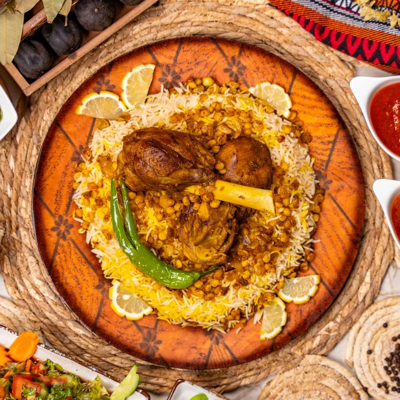
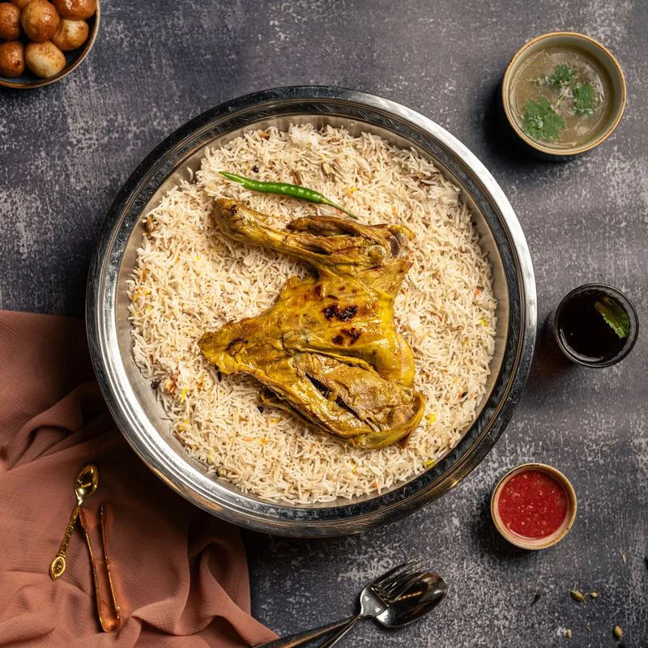
Chapter Two
Mutton shinwari karahi and chicken karahi head the house’s Top 10 menu — cooked in the wok, finished with green chilli, ginger and fresh coriander, and eaten with naan torn straight from the basket.
Prices on request — call the restaurant and ask before you order.
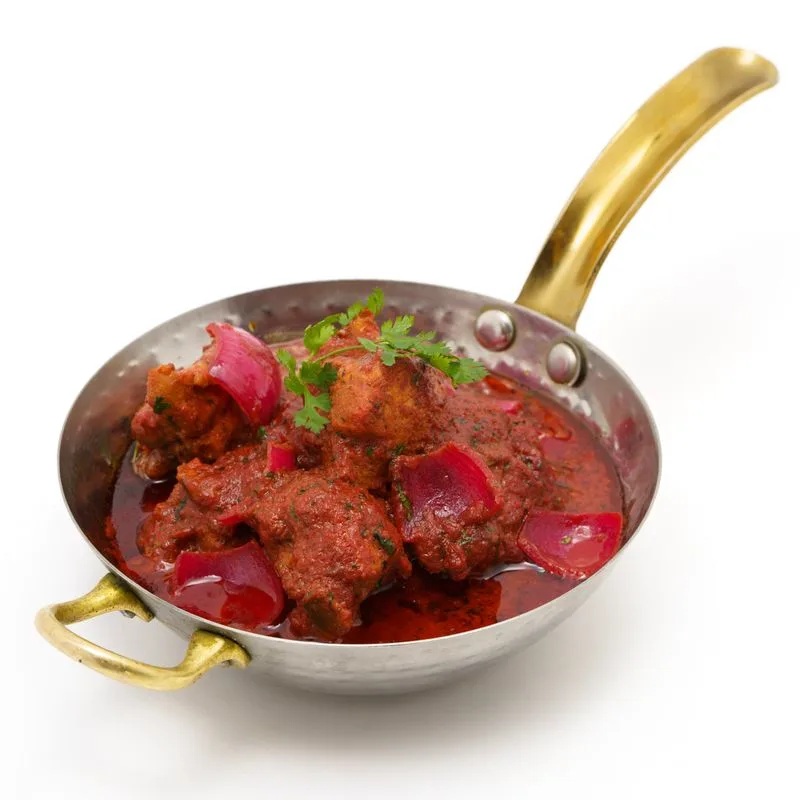
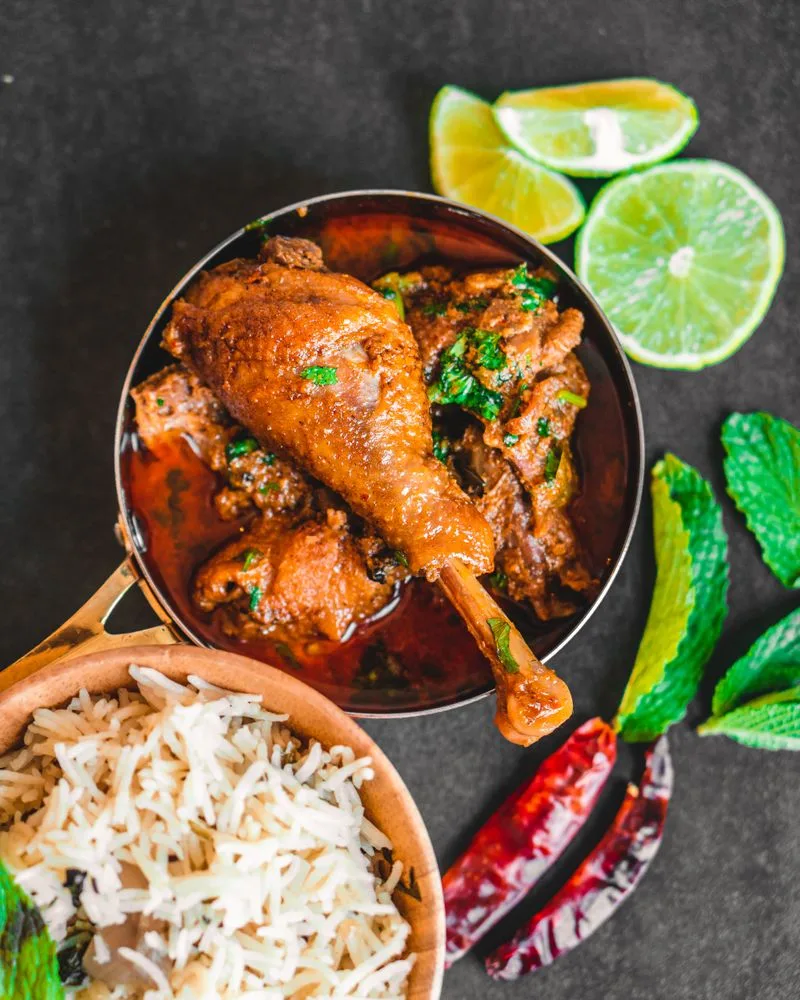
Both from the house Top 10 — the spread regulars order by name.
Chapter Three
Seekh kebab, chicken tikka and the rest of the BBQ spread come off the charcoal — smoky, charred at the edges, and served with green chutney, onion and lemon.
It is the part of the meal that travels best across the table: skewers to pull apart, pieces to pass around, and enough for the table to argue over who gets the last one.
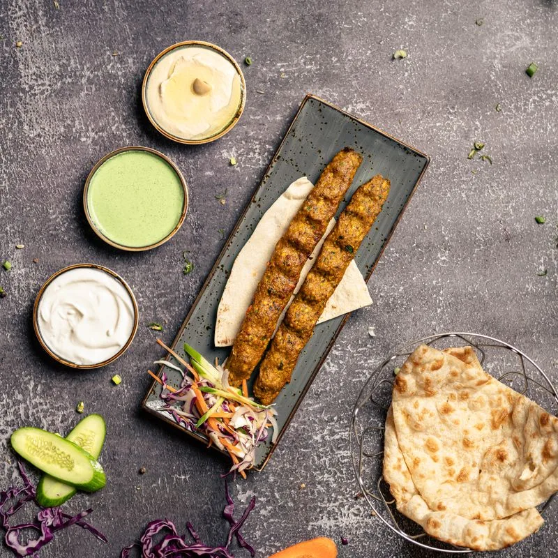
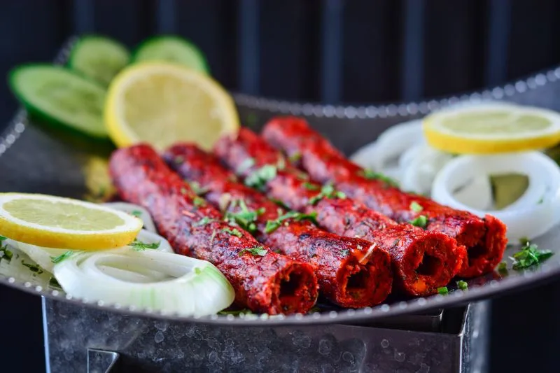
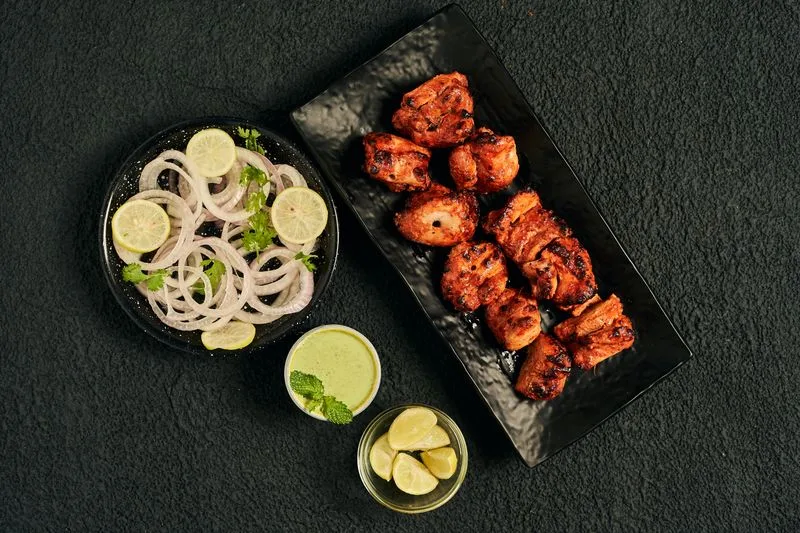
Chapter Four
Naan and roti are part of the meal, not an afterthought — baked fresh and torn into the karahi and the grill alike. And when the table is hungry, the kitchen answers with a full sharing platter: grilled chicken over rice, with tomato, capsicum and boiled egg.
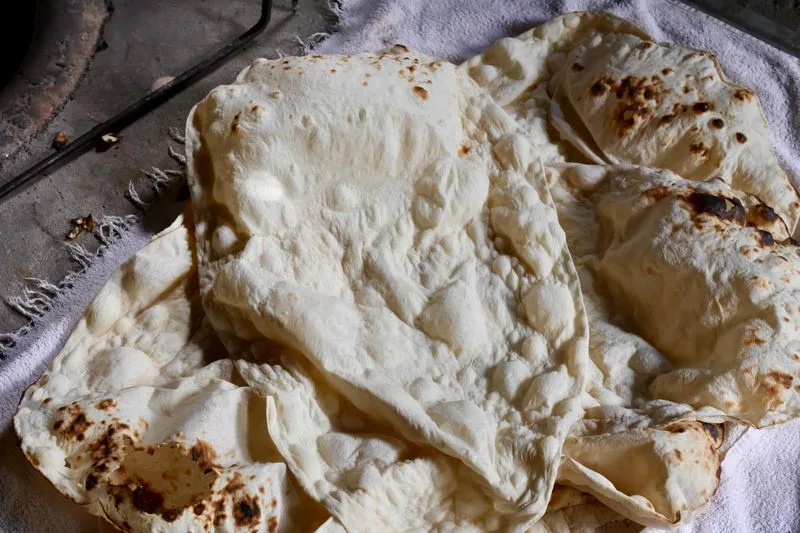
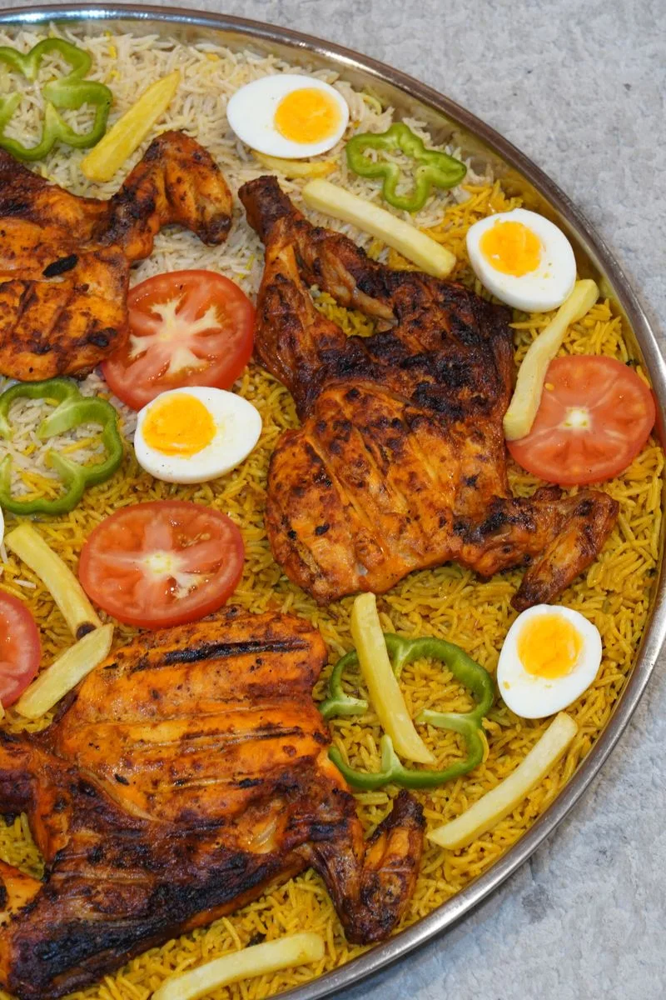
Chapter Five
New on the menu since November 2026, the Chinese platter is Dewan’s first step away from the karahi and the grill — noodles and saucy chicken, served the same sharing way as everything else here.
Early feedback is mixed, and we would rather say so: some diners rate it, others found the taste off. It is new, the kitchen is still finding its feet with it — try it and decide for yourself.
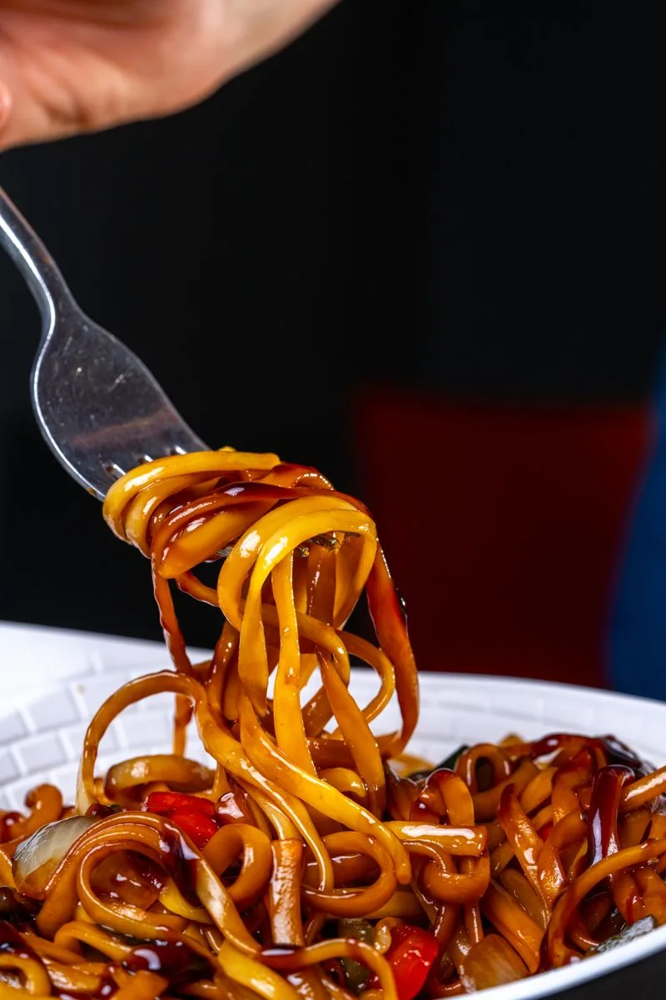
Chapter Six
The meal ends the way a Dera meal should: with lassi — churned and poured fresh, cold, and thick enough to stand a spoon in. One glass after karahi and grill is less a drink than a full stop.
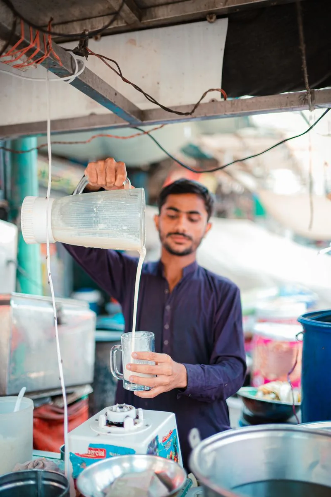
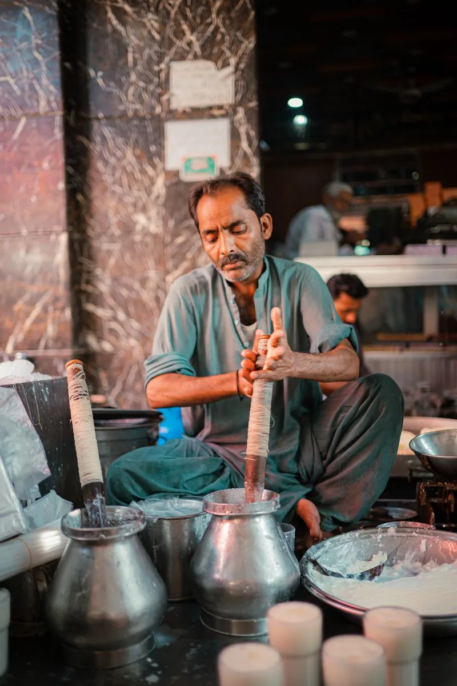
After dark
Dewan is a night-time place. The facade is lit up, the pink neon sign glows over North Circular Road, string lights hang over the outdoor seating, and the tables fill with families and friends eating together long after sunset.
Come hungry, come with people — the platters are built for a table, not a single plate.
What diners keep coming back for
Drawn from what customers say in reviews — no invented praise, no quoted words that were never written.
Chicken and mutton mandi, served for the table with communal floor dining — the house format, and the reason most people walk in.
Mutton shinwari karahi, chicken karahi, seekh kebab and the BBQ spread — the dishes regulars order by name.
Families and friends, eating together after dark under the lights — the restaurant’s busiest, happiest hours.
A Chinese platter joined the menu in November 2026, for tables that want a change from karahi and grill.
Right on North Circular Road, near Fuwara Chowk — on the main road through Dera Ismail Khan.
Good to know
Not every review is glowing, and a demo site should not pretend otherwise. Here is what diners have actually raised.
In September and October 2026, diners reported being charged more than the advertised deal — one deal was advertised at Rs 2,350 and diners said they were charged Rs 2,600, and an October bill was corrected only after the diners objected. Confirm the deal price before you order, and check the bill.
A May 2025 complaint filed with the KPRA citizen portal questioned a 6% amount presented as tax, with no verification code shown; it was recorded as in progress at the time of filing. If anything on a bill is unclear, ask for it itemised.
You will see the name written both ways — Dewan on the listings, Deewan on the restaurant’s own Facebook and Instagram. Same restaurant, same road, near Fuwara Chowk.
Opening hours do not appear in any source we could verify, so none are printed here. Call 0313 8888458 before you set out.
From the table
Questions
On North Circular Road, near Fuwara Chowk, in Dera Ismail Khan, Khyber Pakhtunkhwa — on the main road through the city.
The mandi platters — chicken and mutton mandi served on a shared tray — followed by mutton shinwari karahi and chicken karahi from the house Top 10 menu.
Yes. Diners describe it as a night-time spot for family and friends, with an illuminated facade, a pink neon sign, string lights and outdoor seating.
Yes — a Chinese platter joined the menu in November 2026. Early reviews are mixed, so it is worth knowing that before you order it.
Menu prices are not published anywhere we could verify. Call the restaurant on 0313 8888458 and ask — and confirm any deal price before you order.
Opening hours are not published in any source we could verify, so none are printed here. Call ahead on 0313 8888458 before you set out.
Visit
Phone 0313 8888458
Instagram @deewannamakmandi
Facebook Deewan—نمک منڈی
Hours are not published anywhere we could verify — call ahead to confirm the kitchen is open before you set out.